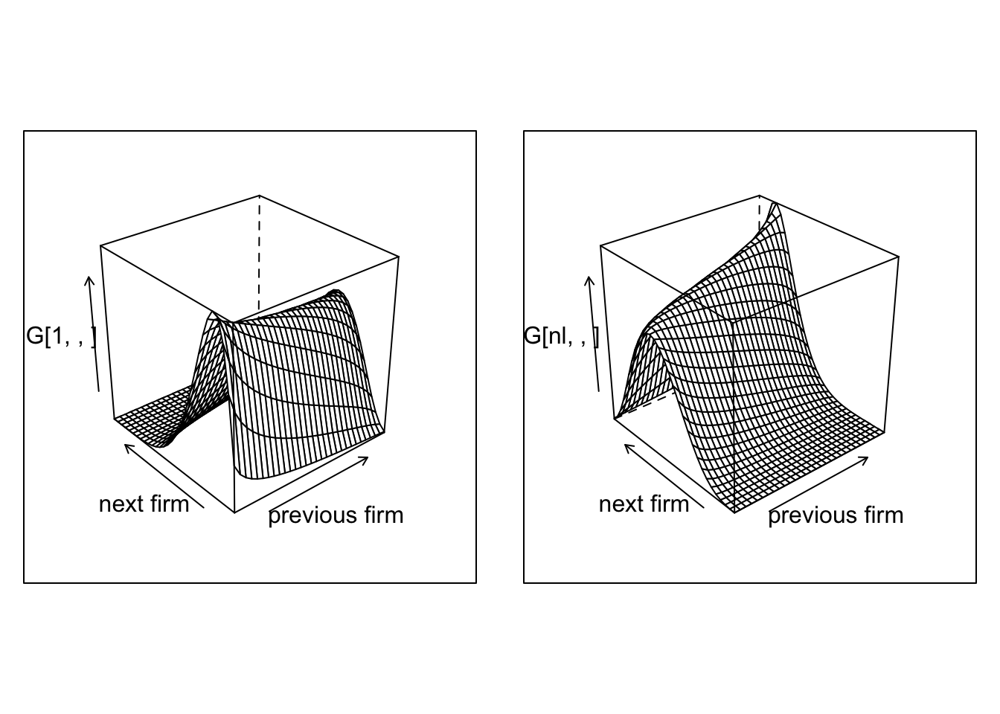
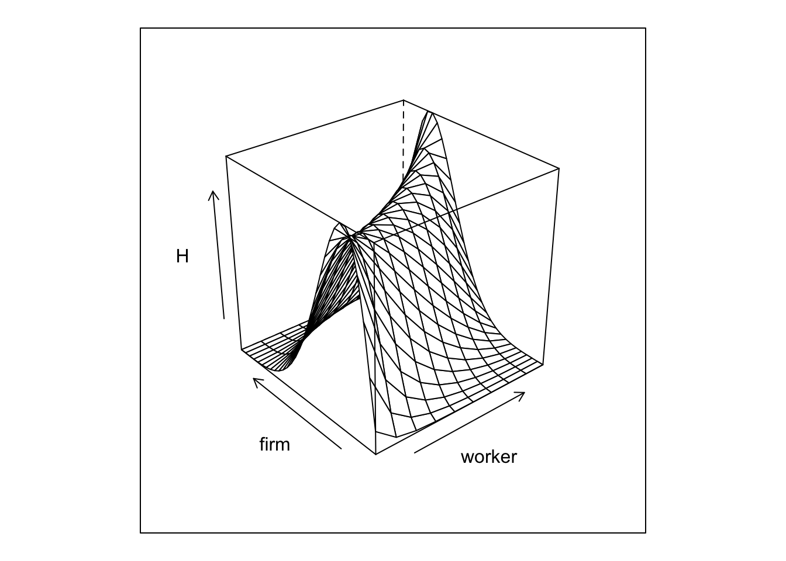

The goal of the following homework is to develop our understanding of the two-way fixed effect models. See the original paper by Abowd Kramartz and Margolis.
One central piece is to have a network of workers and firms over time. We then start by simulating such an object. The rest of homework will focus on adding wages to this model. As we know from the lectures, a central issue of the network will be the number of movers.
We are going to model the mobility between workers and firms. Given a transition matrix we can solve for a stationary distrubtion, and then construct our panel from there.
nk = 30
nl = 10
alpha_sd = 1
psi_sd = 1
# let's draw some FE
psi = qnorm(1:nk/(nk+1)) * alpha_sd
alpha = qnorm(1:nl/(nl+1)) * psi_sd
# let's assume moving PR is fixed
lambda = 0.05
csort = 0.5 # sorting effect
cnetw = 0.2 # network effect
csig = 0.5
# lets create type specific transition matrices
# we are going to use joint normal centered on different values
G = array(0,c(nl,nk,nk))
for (l in 1:nl) for (k in 1:nk) {
G[l,k,] = dnorm(csort*(psi[k] - alpha[l])) * dnorm(cnetw*(psi[k] - psi))
G[l,k,] = dnorm( psi - cnetw *psi[k] - csort * alpha[l],sd = csig )
G[l,k,] = G[l,k,]/sum(G[l,k,])
}
# we then solve for the stationary distribution over psis for each alpha value
H = array(1/nk,c(nl,nk))
for (l in 1:nl) {
M = G[l,,]
for (i in 1:100) {
H[l,] = t(G[l,,]) %*% H[l,]
}
}
Plot1=wireframe(G[1,,],aspect = c(1,1),xlab = "previous firm",ylab="next firm")
Plot2=wireframe(G[nl,,],aspect = c(1,1),xlab = "previous firm",ylab="next firm")
grid.arrange(Plot1, Plot2,nrow=1)
And we can plot the joint distribution of matches
wireframe(H,aspect = c(1,1),xlab = "worker",ylab="firm")
The next step is to simulate our network given our transitions rules.
nt = 5
ni = 100000
# we simulate a panel
network = array(0,c(ni,nt))
spellcount = array(0,c(ni,nt))
A = rep(0,ni)
for (i in 1:ni) {
# we draw the worker type
l = sample.int(nl,1)
A[i]=l
# at time 1, we draw from H
network[i,1] = sample.int(nk,1,prob = H[l,])
for (t in 2:nt) {
if (runif(1)<lambda) {
network[i,t] = sample.int(nk,1,prob = G[l,network[i,t-1],])
spellcount[i,t] = spellcount[i,t-1] +1
} else {
network[i,t] = network[i,t-1]
spellcount[i,t] = spellcount[i,t-1]
}
}
}
data = data.table(melt(network,c('i','t')))
data2 = data.table(melt(spellcount,c('i','t')))
setnames(data,"value","k")
data <- data[,spell := data2$value]
data <- data[,l := A[i],i]
data <- data[,alpha := alpha[l],l]
data <- data[,psi := psi[k],k]The final step is a to assign identities to the firm. We are going to do this is a relatively simple way, by simply randomly assigning firm ids to spells.
firm_size = 10
within_firm_count = ni/(firm_size*nk*nt)
dspell <- data[,list(len=.N),list(i,spell,k)]
dspell <- dspell[,fid := sample( 1: pmax(1,sum(len)/(firm_size*nt) ) ,.N,replace=TRUE) , k]
dspell <- dspell[,fid := .GRP, list(k,fid)]
setkey(data,i,spell)
setkey(dspell,i,spell)
data <- data[, fid:= dspell[data,fid]]Question 1 We are going to do some R-golfing (see wikipedia). I want you to use a one line code to evaluate the following 2 quantities:
To evaluate the number of strokes that you needed to use run the following on your line of code: all.names(expression( YOUR_CODE )). My scores for the previous two are 9 and 18.
We start with just AKM wages, which is log additive with some noise.
w_sigma = 0.8
data <- data[, lw := alpha + psi + w_sigma * rnorm(.N) ]Question 2 Before we finish with the simulation code. Use this generated data to create the event study plot from Card-Heining-Kline:
Question 3 Pick the parameters psi_sd,alpha_sd,csort, csig and w_sigma to roughly match the decomposition in the Card-Heining-Kline paper (note that they often report numbers in standard deviations, not in variances). psi_sd, alpha_sd, w_sigma can be directly calibrated from CHK. On the other hand, csort and csig needs to be calibrated to match the numbers in CHK after AKM estimation. If AKM estimation on psi and alpha is too slow, use the true psi and alpha and get residuals directly.
This requires to first extract a large connected set, and then to estimate the linear problem with many dummies.
Because we are not going to deal with extremely large data-sets, we can use of the shelf algorithms to extract the connected set. Use the function conComp from the package ggm to extract the connected set from our data. To do so you will need to construct first an adgency matrix between teh firms. Here is how I would proceed to construct the adjency matrix:
data[ ,fid.l1 := data[J(i,t-1),fid]], for which you need to first run setkey(data,i,t)jdata = data[fid.l1!=fid] and only keep unique pairsvalue:=1 and cast this new data to an array using the acast command with fill=0Question 4 Use the previous procedure, extract the connected set, drop firms not in the set (I expect that all firms will be in the set).
The part of the problem set is for you to implement the AKM estimator. As discussed in class, this can be done simply by updating in turn the worker FE and the firms FE.
Start by appending 2 new columns alpha_hat and psi_hat to your data. Then loop over the following:
alpha_hat by just taking the mean within i net of firm FE, use data.table to do that very efficientlypsi_hat by just taking the mean within fid net of worker FE, use data.table to do that very efficientlyQuestion 5 Run the privious steps in a loop, at each step evaluates by how much as the total mean square error changed. Check that is goes down with every step. Stops when the MSE decreases by less than 1e-9. Get MSE only from movers.
Note You can increase speed by focusing on movers only first to recover the psi.
We now have every thing we need to look at the impact of limited mobility bias. Compute the following:
Question 6 Report this in a plot. Fix T and vary lambda. Plot (i) correlation between firm fixed effect and individual fixed effect and (ii) variance of firm fixed effect against the number of movers. This should look like the Andrews and Al plot.
Pick a relatively short \(T\) together with a low \(\lambda\). Simulate one data-set. Next conduct the following procedure:
The theta in bias correction formula is on var(psi), not psi itself.
Question 7 Report the true values, the non biased corrected and the bias corrected.